釣行日誌 故郷編
2019/08/11 久しぶりのスピナー
今日も今日とて、朝６時に叔父が駐車場まで迎えに来てくれた。大荷物を積み込んで、いざ、おなじみの川を目指す。叔父の運転なので気軽に半分眠りながら揺られてゆく。
街道沿いのコンビニでお弁当と、叔父の入漁券を買うと、しっかりレジのおばさんに顔を覚えられていた。
現地着は11時。のんびりとしたものである。いつものバス停脇に車を停め、釣り支度を始める。陽ざしが暑い暑い。今日も叔父は堰堤から、僕は少し上流から入渓しようと、焼けたアスファルトの上を、何かに急かされるように歩いて行く。
途中で農家のおばさんが、この暑い中草刈りをしていたので、足を止めて挨拶をする。しばし立ち話をして得た情報では、この集落の辺りではクマは出ていないということだった。しかし、猿やイノシシが狼藉の限りを尽くしているらしい。そのせいで、川岸と農地の境界には延々と電気柵が張り巡らされている。でも、猿たちは上から飛び越えてくるからなぁ。お百姓さんも大変だ。
40分ほど歩き、いつもより上流の未知の区間へ入る。河原に降りて上流を見ると、高い堰堤があり、その下が淵になっている。丁寧に手前のチャラ瀬から攻めつつ、足音を忍ばせて淵に近づく。真ん中に投げた２投目で小型がヒット、しかしあと少しでネットという位置でバラシてしまう。残念。
それ以降、その淵では出ず、流れを下って次の小さな藪下の流れ込みに目を付けた。しばらく見ていると、下流側に続く細長い淵のアタマでわずかに波紋が見えた。ライズだった。
『おお！ 居る居る.....』
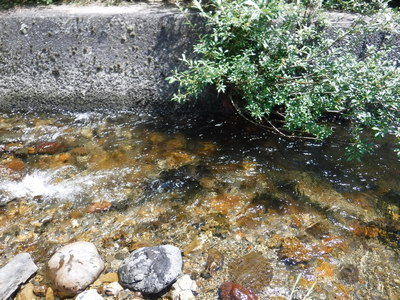
流れ込みには護岸擁壁の上から茂みが被さっていて、僕の技量ではキャストが難しかったので、必殺のフローティングミノーの送り込みを試みる。白泡の辺りにミノーを落し、ベールは返さずにそのまま延々と流れに乗せて下流へ届ける。ほぼ淵尻に到達した頃を見計らってリーリングを始める。どんくさいイワナのために、ごくゆっくりとミッチェル 409 のハンドルを巻く。
チャートヤマメカラーの黄緑が、まさに藪下を通過するタイミングでググンとアタリが感じられ、ロッドが曲がる。良く引いて、しばし魚体が暴れる感触を愉しむ。ネットに収まったのは、まずまずの型の綺麗なイワナだった。
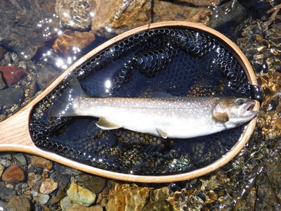
しかし、それ以降パッタリと反応が無くなり、叔父を待たせても悪いので１時前に車に戻った。叔父には出なかったらしい。
すでに叔父はお昼を済ませていたので、運転してもらい、僕はお弁当を食べつつ移動する。
昔、炭焼き小屋のあったポイントへ行ってみると、幸い他の釣り人の車も姿も無かった。では、第２ラウンド、ということで、叔父と上・下流に別れて川に降りる。
良いポイントの連続だが、何故か１尾も出ない。小１時間釣り下ってから車に戻ると、叔父がまだ粘っているのが見えた。15分ほど見学しつつ待っていると、あきらめた叔父が戻ってきた。聞けば、荒瀬の中の石裏に流し込んだ小さなスピナーが突然重くなり、白泡から大きな頭が見えた瞬間フックが外れてしまったとのこと。
「いやぁ、逃げた魚は大きいわ！ ありゃ35cmはあったな.....」
と、叔父が豪快に笑った。
再び車に乗り込み、水分を補給し、次のポイントを目指す。橋詰めに停まっていた群馬ナンバーの中では釣り人らしき人物が２人、のんびり休憩している。
性懲りも無く、再び爆釣の淵を目指す。途中、地元の青年がほんの小さな沢で餌釣りをしていた。
「ははぁ、この沢にもやっぱり居るんだね」
「ああ、地元の人間には勝てんよ」
爆釣の淵の橋詰めに停めると、上流にテンカラの人が居るのが見えた。こりゃ、攻められた後になったかな？ と思ったが、ルアーならまだ出るだろうと、叔父と２人で淵に降りる。
僕はこの淵では、あの爆釣の日以外は釣れた覚えが無いので、さっさと釣り下りを決め込み、徐々にフローティングミノーで探ってゆく。
荒瀬で１尾、チャラ瀬で１尾、小さいのが相手をしてくれた。
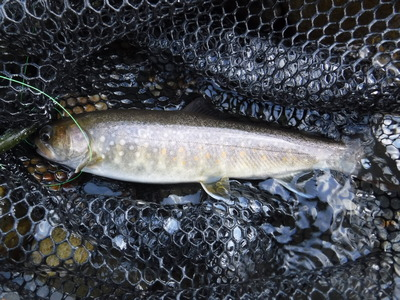
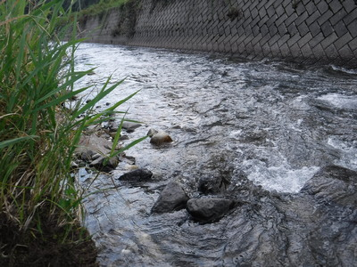
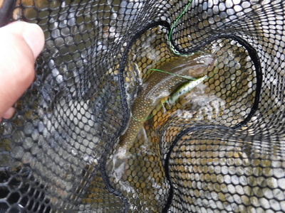
しばらくキャストしながら下って行くと、青いスズキが堤防道路に停まって、降りてきた叔父が手招きをしたので、草むらを強引に藪漕ぎして、もがきながらなんとか道路へとへずり登る。
ゼイゼイと荒い息で叔父の釣果を尋ねると、さっぱりアカンかったようだ。爆釣の淵で叔父があぶれるとは、今日はよほど喰いが悪いのだろうか？ 車に乗り込み、堤防道路を右に曲がり、国道に向かって狭い道を上がって行くと、さっき小沢を釣っていた青年が良い型のイワナを１尾、ススキにエラを通して持って歩いていた。
「やるねぇ！」
「な、言っただらぁ。地元の人間には敵わんよ」
いつもの堰堤へ着き、橋詰めに停める。叔父はくたびれたそうで、パスして待機となった。熊避け鈴と笛を忘れたので、大声を出しながら入渓する。叔父のスピナーに大物が来た話を聞いて、ここでは僕も銀色のブレットンを結んだ。流れ込みの対岸から引っ張ると、１尾ヒット。続いて、落ち込みのえぐれから小物が出るが、フッキングしなかった。護床ブロックを歩いて対岸に移り、反対側から白泡の中を引いたらまた１尾喰った。
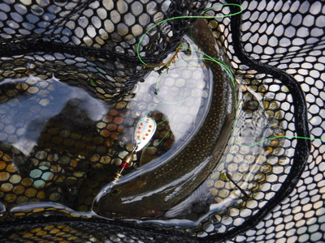
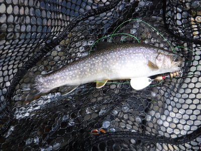
久しぶりのスピナーだったが、改めてその効き目に驚かされた。叔父を見習って正解だった。
けっこう水量が多かったので、擁壁のコンクリートにへばりつき、苦労して下流に移って釣り下る。今度は浅瀬が続くので、再びチャートヤマメカラーのドクターミノーに替えた。
岩盤のえぐれたポイントで１尾出て、引っこ抜いてネットで受ける。
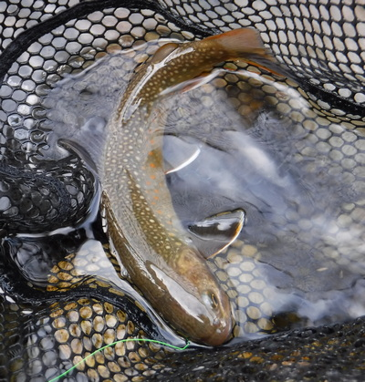
その下の淵で良型が出た。１番深いところの沈み石の周囲をしつこく引いていたら、たまらなくなって飛びついてきた。良く引いた。丁寧にファイトし、慎重に取り込む。
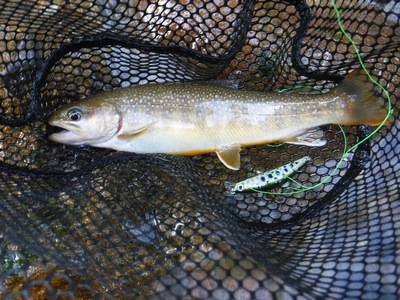
気を良くして同じ淵の尻に遠投すると、着水とほぼ同時にガクッとショックが伝わり、ロッドが重くなった。今度も良い型であった。非常に嬉しい。
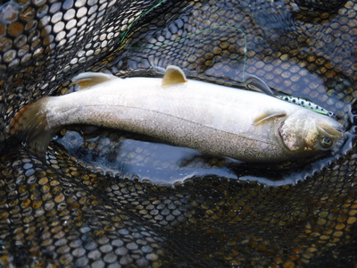
さらに釣り下ってゆくと、はるか下流にフライの人が見えたので、今日はここまでとして引き返す。クマの恐怖と密集した雑草と闘いつつ撤収した。
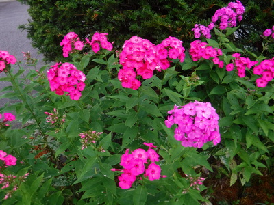
花咲き乱れる集落を抜けて車に戻り、濡れた衣類を着替えて、僕の運転でいつものファミレスへ行く。ここの店員さんにも顔を覚えられていた。（笑）
ヒレカツ定食でお腹がいっぱいとなり、コーヒーを飲んで夜のドライブが始まる。帰途は話が弾み、釣り具談義、ラインの太さ、ネットの必要性などなどを叔父が珍しく、熱い口調で語った。
「今日ネットを持っていたら、あのスピナーに出た大物を取り込めていたかもなぁ.....。」
今年、叔父は65歳、僕が57歳となった。竹内まりやの名曲「人生の扉」の歌詞ではないが、いつまで、あと何回、こんな幸せな日を迎えられるのだろうか？
駐車場に着くと、午前様。実に素晴らしい１日だった。感謝。
釣行日誌 故郷編 目次へ
サイトマップ
ホームへ
お問い合わせ